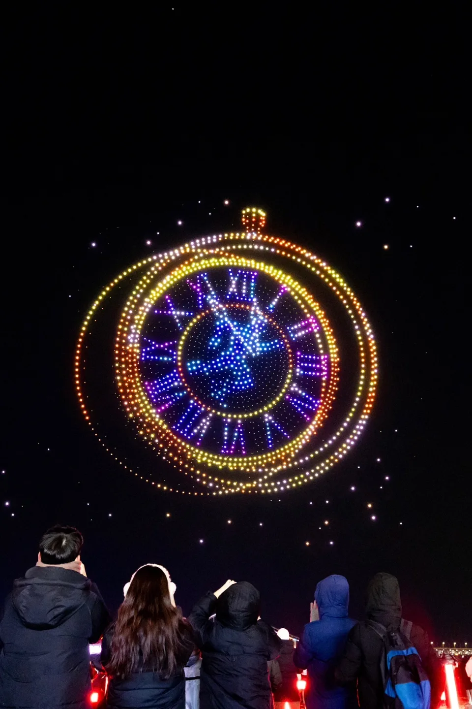
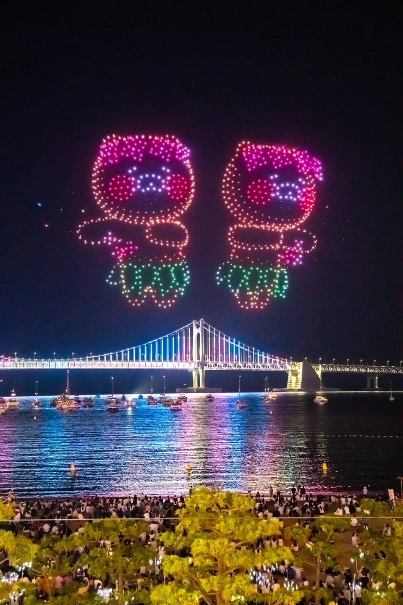
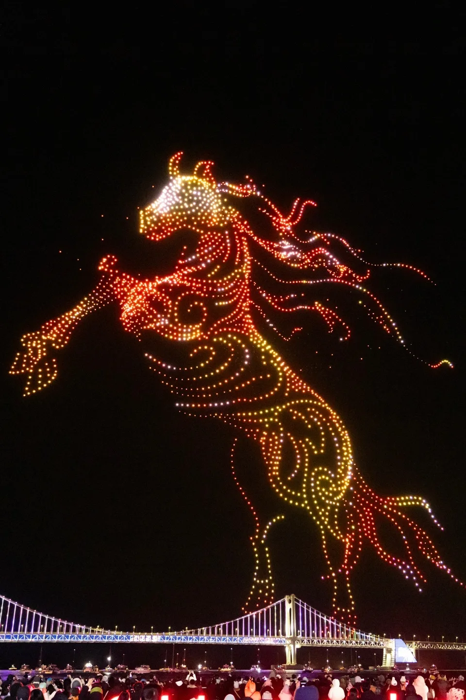
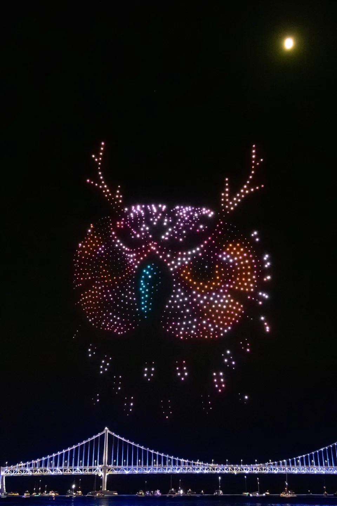
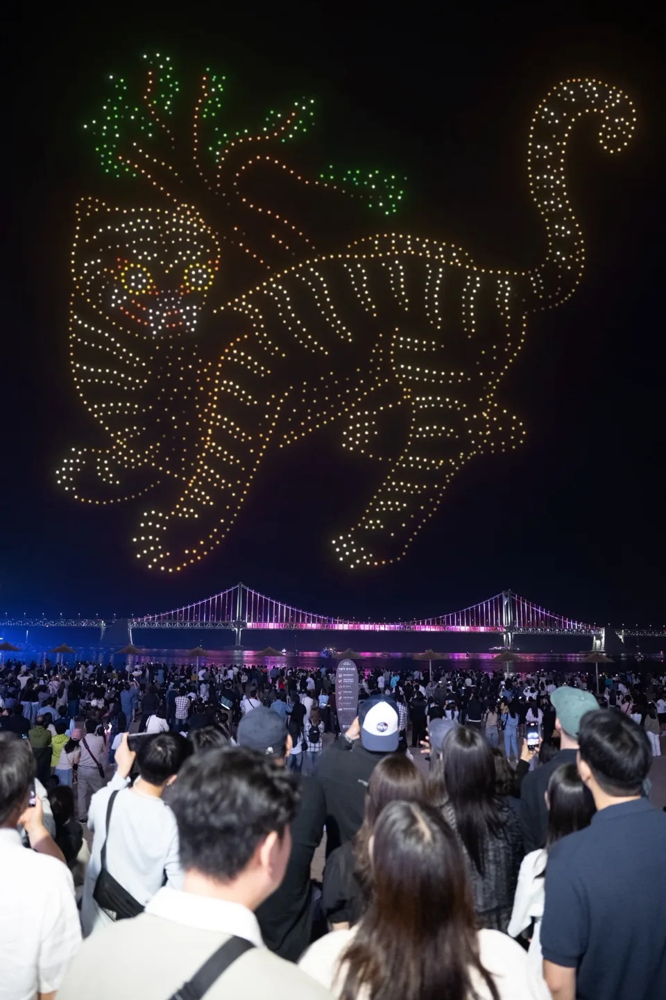

▲ 광안리 M 드론라이트쇼의 드론 편대비행 장면. 추석인 9월 26일에는 평소보다 대폭 확대된 3,000대 규모의 특별공연이 열린다
1. 매주 토요일 밤, 추석엔 드론 3,000대로 커진다
부산 수영구 광안리해수욕장에서는 매주 토요일 밤, 전국 최초의 상설 드론라이트쇼인 '광안리 M 드론라이트쇼'가 열린다. 하절기(3~9월)에는 오후 8시와 10시, 동절기(10~2월)에는 오후 7시와 9시, 회당 12분 내외로 진행되며 광안리 해변 어디서나 무료로 관람할 수 있다. 그런데 추석 연휴인 9월 26일(토)에는 평소와 다른 특별공연이 준비돼 있다. 이날은 오후 8시 단 한 차례만 진행되지만, 평소 상설 공연보다 규모가 대폭 커진 드론 3,000대와 레이저쇼가 결합된 '한가위 달밤의 연회'가 펼쳐진다. 우리 고유의 전통적인 아름다움을 화려한 드론 연출로 표현하는 것이 이번 특별공연의 테마다.
▲ 정교한 시계 모양을 그려내는 드론 편대비행. 광안리 M 드론라이트쇼는 회당 12분 내외로 매주 토요일 상설 진행된다 ⓒ 광안리 M 드론라이트쇼
| 날짜 | 공연명 | 시간 | 비고 |
|---|---|---|---|
| 매주 토요일(상설) | 광안리 M 드론라이트쇼 | 20:00 · 22:00 (하절기 기준) | 회당 12분 내외 |
| 9월 12일 | 2026 LCK with 광안리 | 20:00 | 리그 오브 레전드 테마 |
| 9월 19일 | 빛나는 청춘을 위해 | 20:00 | - |
| 9월 26일(추석 연휴) | 한가위 달밤의 연회 | 20:00 (단 1회) | 드론 3,000대 + 레이저쇼 |
2. 어디서 봐야 제일 잘 보일까 — 관람 명당

▲ 광안대교를 배경으로 펼쳐지는 드론 편대비행. 드론이 만드는 대형은 광안리해변 중앙을 정면으로 바라보도록 설계돼 있다 ⓒ 광안리 M 드론라이트쇼
드론라이트쇼는 광안리 해변 어디서나 감상할 수 있지만, 드론이 만드는 3D 그래픽은 수영구 생활체육광장 앞 백사장을 기준으로 정면을 바라보도록 설계돼 있다. 그래서 백사장 중앙이나 '안녕, 광안리' 조형물 앞이 대표적인 명당으로 꼽힌다. 조금 더 여유롭게 보고 싶다면 민락수변공원 쪽도 앞이 탁 트여 있어, 드론과 광안대교 조명·레이저쇼를 한 프레임에 담기 좋다. 추석 특별공연은 평소보다 훨씬 많은 인파가 몰릴 것으로 예상되는 만큼, 명당 자리를 노린다면 공연 시작 최소 1시간 전에는 자리를 잡는 것이 안전하다.

▲ 역동적인 형상을 그려내는 드론 편대. 추석 특별공연에서는 전통적인 아름다움을 주제로 한 연출이 예고돼 있다 ⓒ 광안리 M 드론라이트쇼
3. 주차보다 지하철 — 대중교통 접근법
▲ 보름달이 떠오른 광안리 밤바다. 추석 연휴 특별공연 당일은 평소보다 훨씬 많은 인파가 몰릴 것으로 예상된다 ⓒ 광안리 M 드론라이트쇼
도시철도 2호선 광안역 5번 출구에서 도보 약 13분, 버스는 42번·62번을 타고 광안리해수욕장 정류장에서 내리면 된다. 인근에 공영주차장이 있긴 하지만, 추석 연휴 특별공연 당일은 해변 일대 교통 통제와 주차난이 예상되므로 자가용보다는 대중교통 이용을 강력히 권한다. 공연이 끝난 직후에는 지하철역과 버스정류장으로 인파가 한꺼번에 몰리는 만큼, 서두르지 않고 여유 있게 이동하는 편이 안전하다.
📍 참고로 알아두면 좋은 것
광안리 M 드론라이트쇼는 2024년 시작된 전국 최초의 상설 드론라이트쇼로, 특별한 예약이나 입장료 없이 해변에 나가기만 하면 누구나 볼 수 있다. 우천이나 강풍 등 기상 상황에 따라 당일 공연이 취소될 수 있으므로, 방문 전 공식 홈페이지나 SNS를 통해 진행 여부를 확인하는 것이 좋다. 바로가기
4. 드론쇼 전후로 즐기는 광안리

▲ 다채로운 색으로 캐릭터 형상을 그려내는 드론 편대. 드론쇼 공연 전후로 광안리 해변의 카페·포장마차 거리도 함께 즐길 만하다 ⓒ 광안리 M 드론라이트쇼
공연은 12분 내외로 짧은 편이라, 앞뒤로 시간을 넉넉히 잡고 광안리 해변 일대를 함께 둘러보는 코스를 짜는 것이 좋다. 해변을 따라 늘어선 카페와 포장마차 거리에서 저녁을 먹거나 커피를 즐기며 공연 시작을 기다리는 것도 광안리 밤 나들이의 묘미다. 추석 연휴 기간에는 인근 숙소도 예약이 빠르게 차는 편이므로, 당일치기가 아니라면 숙박 계획을 서둘러 세우는 편이 안전하다.
5. 문의처와 체크리스트

▲ 드론라이트쇼가 시작되기 전 인파로 채워진 광안리 해변. 추석 당일 특별공연은 평소 상설 공연보다 관람객이 크게 늘어날 전망이다 ⓒ 광안리 M 드론라이트쇼
공연 관련 문의는 수영구청 관광스포츠과(☎ 051-610-6518, 6514)로 하면 된다. 정확한 진행 여부나 우천 시 대체 일정 등은 공식 홈페이지와 SNS 공지를 통해 가장 빠르게 확인할 수 있다.
✅ 광안리 드론라이트쇼, 이것만은 확인하세요
· 추석 특별공연 '한가위 달밤의 연회'는 9월 26일(토) 오후 8시, 단 한 차례
· 드론 3,000대 + 레이저쇼 결합, 평소 상설 공연(매주 토요일)보다 대폭 확대된 규모
· 명당은 수영구 생활체육광장 앞 백사장 중앙, '안녕, 광안리' 조형물 앞, 민락수변공원
· 2호선 광안역 5번 출구 도보 13분, 버스 42·62번 이용 — 주차보다 대중교통 추천
· 무료 관람, 별도 예약 불필요, 우천 시 취소 가능하니 방문 전 공식 채널 확인
6. 정리
광안리 M 드론라이트쇼는 매주 토요일 무료로 즐길 수 있는 부산의 대표 야간 볼거리지만, 추석인 9월 26일만큼은 다르다. 드론 3,000대와 레이저쇼가 결합된 '한가위 달밤의 연회'가 오후 8시 단 한 차례 펼쳐지는 만큼, 명당 자리를 미리 확보하고 대중교통으로 움직이는 것이 이번 추석 연휴 광안리 나들이의 핵심이다.